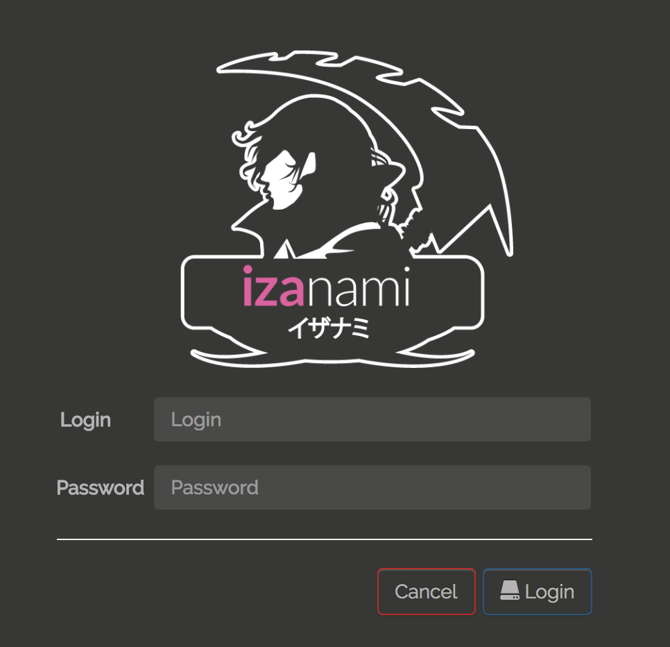
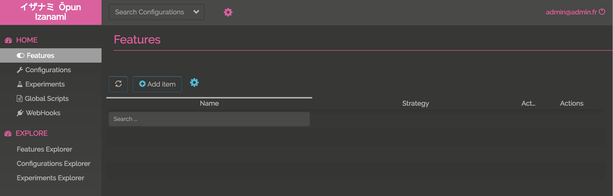
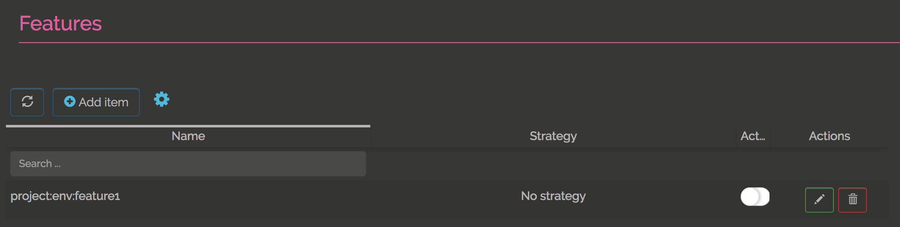

Quick start
what you will need :
- JDK 8
- wget
First download the executable jar :
wget --quiet 'https://github.com/MAIF/izanami/releases/download/v1.0.0/izanami.jar'
And then run it
java -jar izanami.jar
Go to http://localhost:9000
First login! When you’ve just started the server, the login password is admin/admin123 (of course you can change it :) ) :
Ok, now you’ve reached the home page

Izanami encourage you to create a real user but let’s ignore that for the moment and close the pop up.
Now we will an create API key to use the API :

And then click add key

You can change the client id and client secret if you need it. Hit the create button

Ok that cool now let’s create a feature. Click to the “features” menu and then click to “Add item” :
You can create a new feature with a dedicated strategy :

Let’s keep this simple and choose “NO_STRATEGY”. Hit the “Create feature button” and that it !
Now we will call the API to get the state of the feature using the client id and client secret that we’ve created before :
curl -X GET \
'http://localhost:9000/api/features/project:env:feature1/check' \
-H 'Content-Type: application/json' \
-H 'Izanami-Client-Id: client' \
-H 'Izanami-Client-Secret: client1234' --include
# And the result is
# HTTP/1.1 200 OK
# Date: Fri, 08 Dec 2017 10:25:53 GMT
# Content-Type: application/json
# Content-Length: 15
#
# {"active":true}%
Now we can deactivate the feature using the toggle button :

curl -X GET \
'http://localhost:9000/api/features/project:env:feature1/check' \
-H 'Content-Type: application/json' \
-H 'Izanami-Client-Id: client' \
-H 'Izanami-Client-Secret: client1234' --include
# And the result is
# HTTP/1.1 200 OK
# Date: Fri, 08 Dec 2017 10:30:09 GMT
# Content-Type: application/json
# Content-Length: 15
#
# {"active":false}%
Ok not so hard, so now let’s go deeper !